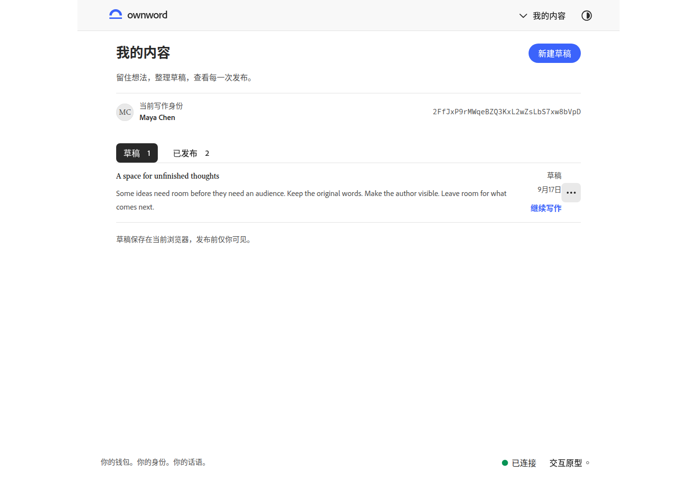
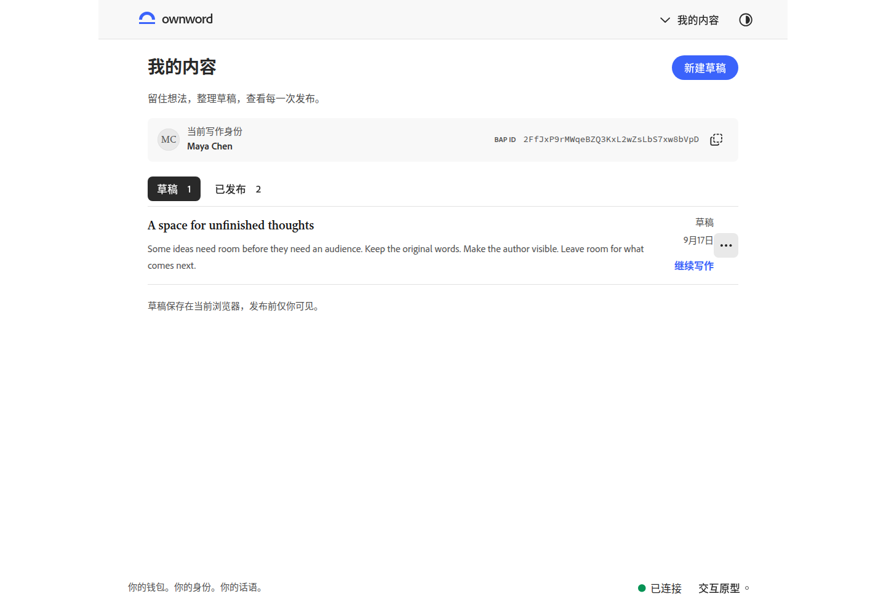
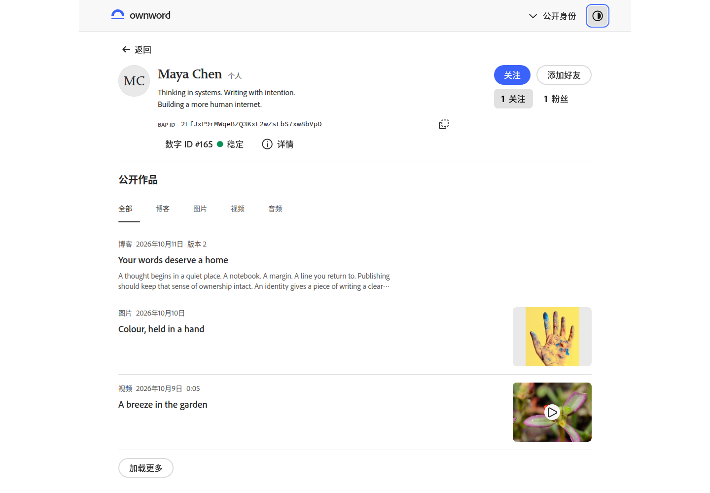
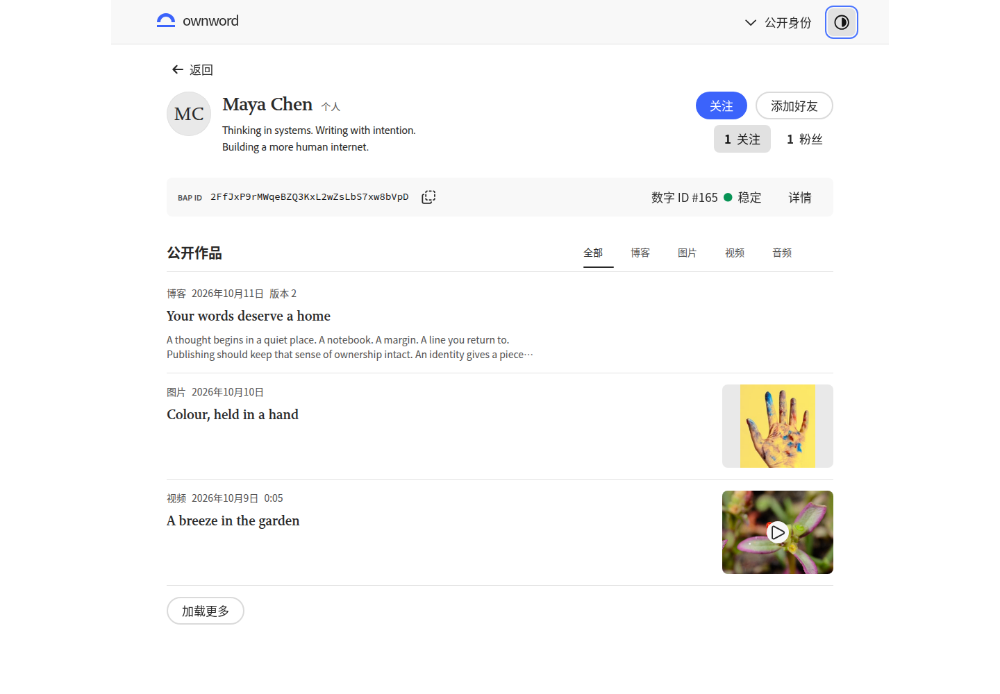
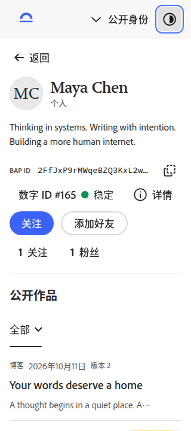
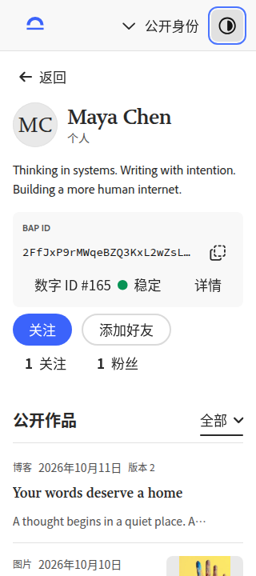
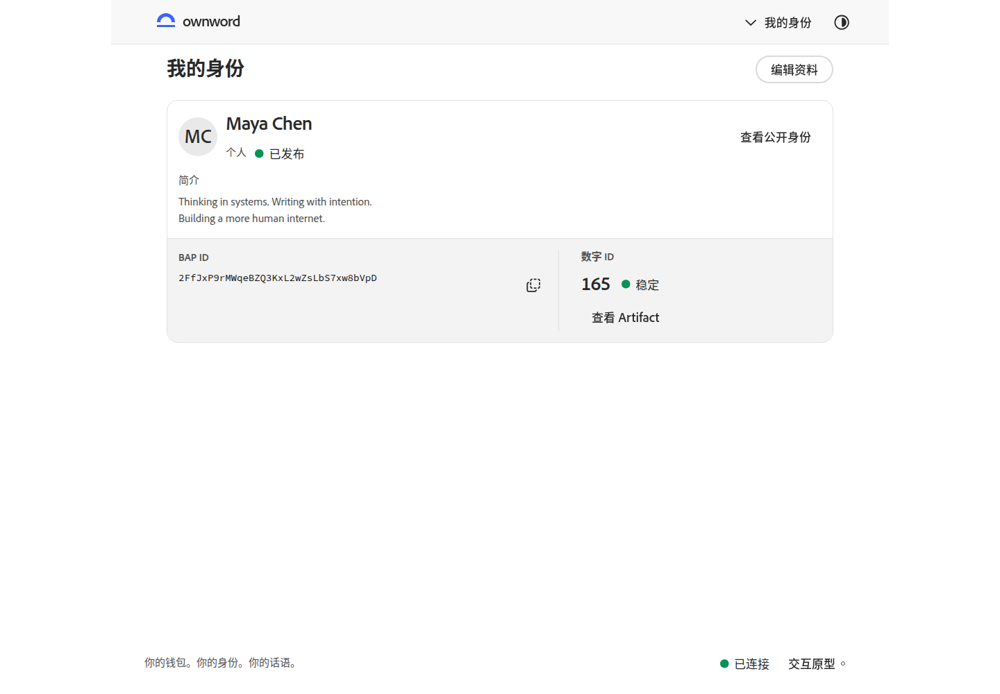
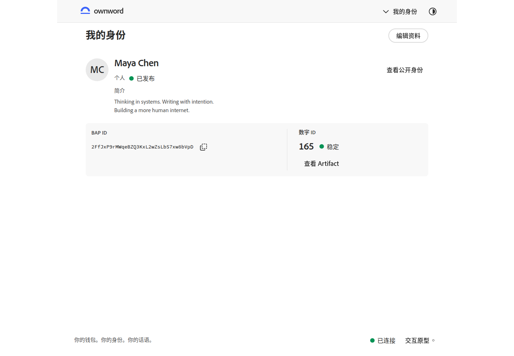
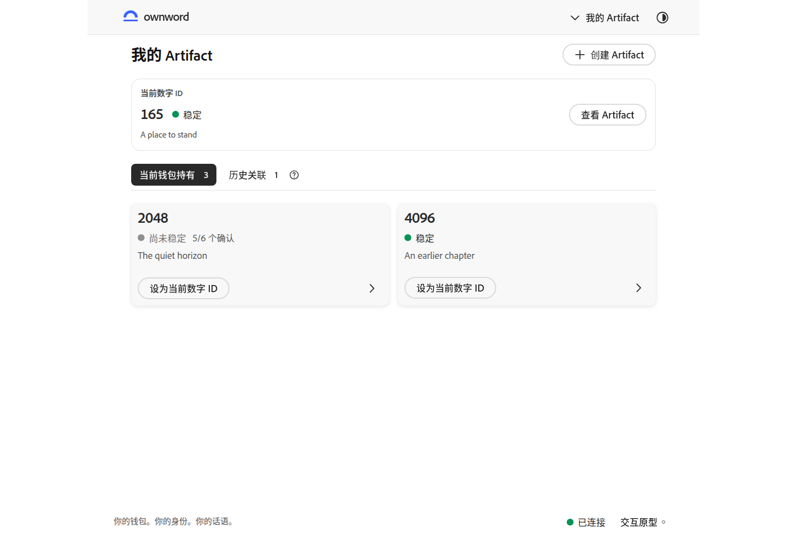

我的内容
作者信息形成紧凑上下文，复用统一复制按钮；草稿和已发布作品使用清楚的标题层级。


以作者和作品为中心，重新组织身份、操作与内容层级。下方对比使用相同示例数据、语言和视口；点击图片可查看原尺寸。
打开交互原型 · 待视觉复核
身份信息归入浅底标识条，复制紧邻 BAP ID。作品标题与筛选同行；内容标题恢复为 20px 衬线字级。


320px 下保持身份、标识、关系和作品的阅读顺序；首条作品标题在首屏可见。


资料从整块卡片中释放，姓名与简介共用阅读起点；BAP ID 与数字 ID 单独成组。


作者信息形成紧凑上下文，复用统一复制按钮；草稿和已发布作品使用清楚的标题层级。


当前数字 ID 使用独立浅底分组；其他持有对象改用官方 Card 的 tertiary 变体，操作区单独分隔。
